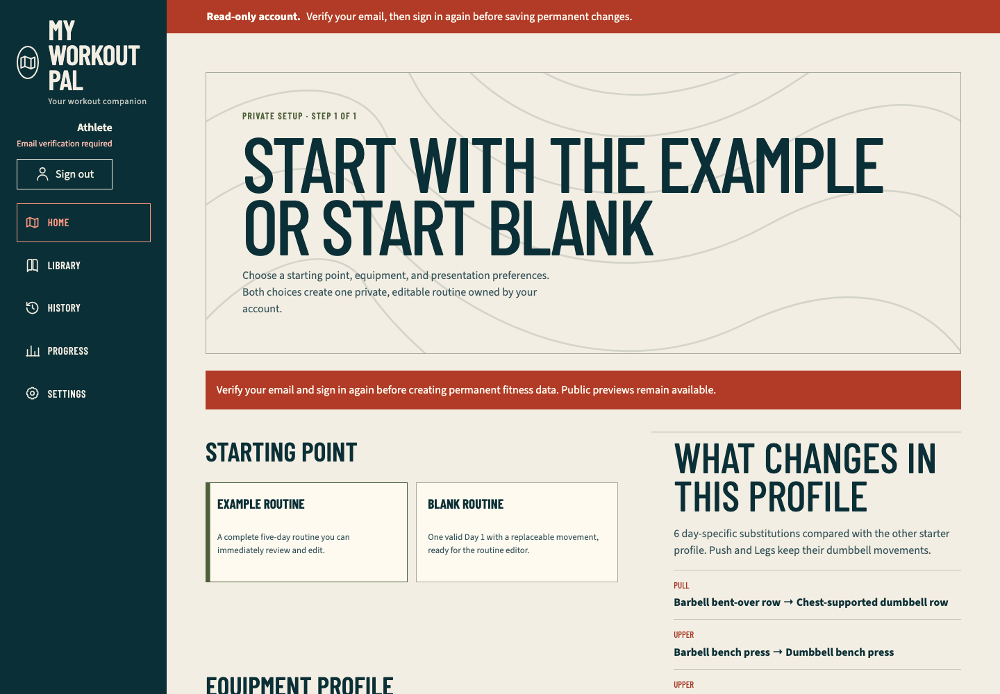
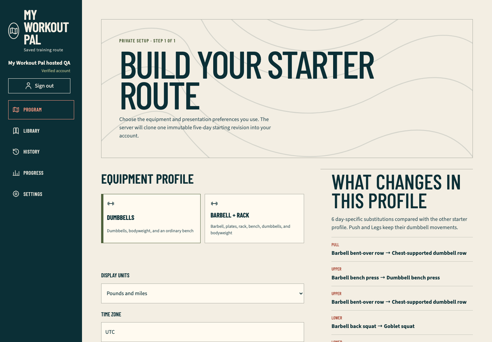

Hosted password-authentication QA
Scope
This is the newest completed QA run. The credentialed lifecycle exercised the public production application at exact runtime commit c60814e530c0d367e90661217859671379b31bad, Ready deployment dpl_8afudXf6iSeZVXSCAnhz8JgXYF1D, with the simplified privacy-safe hosted runner at exact evidence-source checkpoint 3734cafb135b9cd5d1a0da3e80b93190a1d318a5. The complete maintained runner and evidence are published on main at a6ee66c68d95bb678a9c0ad80f8e9bb956cdf653, Ready as production deployment dpl_EB3S4VW25KwGasmAgsF6r61t3ExW; that later release does not change application runtime behavior.
The run used one generated high-entropy password identity in the reserved example.com domain. It did not use a personal mailbox or member account, submit onboarding, create Neon-owned data, or retain any email, password, UID, token, cookie value, provider payload, trace, video, or browser profile.
Production behavior observed
- Invalid credentials returned the bounded application error.
- Registration succeeded and the application explained that verification is required before permanent changes.
- Duplicate registration returned the bounded sign-in/recovery guidance.
- Known and unknown recovery requests displayed the identical non-enumerating message. The intentionally non-deliverable address means provider acceptance was observed, not inbox delivery.
- An unverified password identity received a legitimate secure server session, the visible read-only banner, a disabled Create my program action, and an account-shell Sign out action before onboarding.
- The session cookie was present with
HttpOnly,Secure,SameSite=Strict, and path/. Its value was checked only for nonempty high entropy and was never printed or retained. - Account-shell sign-out cleared the session cookie and returned to public authentication without a profile or database mutation.
- Firebase Admin changed
emailVerifiedonly for the exact captured disposable UID. A fresh bounded sign-in to/sign-in?returnTo=%2Fapprendered Verified account and enabled Create my program. - Firebase Admin revoked only that UID's refresh tokens. Reloading
/appthen failed closed at/sign-in?returnTo=%2Fapp. - The exact first-party mutation sequence was three session operations: create, delete, create. No
/api/appmutation was sent. - Cleanup deleted the exact captured Firebase UID in
finally; the aggregate Firebase user count was0before and0after the completed run.
Retained fail-first evidence
- The first run failed with only a generic sanitized boundary, so a tested fixed lifecycle-stage code was added without exposing arbitrary provider or browser error detail.
- A later run reached verified session creation but expected
/appafter signing in from plain/sign-in; the browser truthfully opened the default public/. The corrected journey explicitly reopens/sign-in?returnTo=%2Fappbefore verified sign-in. This was a harness route-expectation defect, not a claimed production navigation outage. - Chrome reported the two deliberately exercised Firebase Identity Toolkit
400responses as generic console resource errors. The final harness awaits the exactsignInWithPasswordandsignUpoperations, asserts both statuses, and permits only the matching two generic messages. Every other console error remains fatal. - Full-document authentication transitions superseded one exact
HEAD /manifest.webmanifestmetadata probe with an extendednet::ERR_ABORTEDcode. The final collector permits only GET or HEAD on that exact manifest path withcancelledor anERR_ABORTEDprefix; API, RSC, script, style, image, mutation, and every other request failure remain fatal. - The session-boundary source now uses full-document replacement after server-session creation or deletion. A fail-first source-policy test proves the prior App Router replace-and-refresh pattern is absent from those boundaries.
Automated and deployment evidence
- The focused hosted command and navigation-boundary tests pass: 2 files and 3 assertions.
- Strict TypeScript and scoped lint pass for the runner and session-boundary changes.
pnpm verifyon the released navigation fix passes 97 files and 660 tests, four database files and 34 migration/bootstrap assertions, all 27 exact-two approved-video mappings, generated PWA and 35-document parity, the Next.js 16.3.2 Webpack build, and the 41-route production boundary.- The opt-in production command passed in Chromium at
1440×1000, returnedstatus: passed, confirmed secure-cookie attributes, recorded exactly three first-party mutations, and confirmed cleanup plus equal pre/post Firebase counts. - Serious and critical Axe results were empty on sign-in, unverified
/app, and verified/app. Keyboard activation was used for authentication tasks, submission, and pre-onboarding sign-out. - GitHub reported Vercel success for exact runtime
c60814e530c0d367e90661217859671379b31bad. Production deploymentdpl_8afudXf6iSeZVXSCAnhz8JgXYF1Dis Ready and ownshttps://my-workout-pal-chi.vercel.app. - Read-only post-run checks returned
200for/,/program,/library,/sign-in, and the bounded unauthenticated/appresponse. The one-hour exact-deployment error query returned no entries.
Browser evidence
Unverified account

The screenshot shows the read-only banner, email-verification status, account-shell sign-out, disabled permanent onboarding boundary, and public starter choices. No identity value is visible.
Verified account

The screenshot shows the same pre-onboarding shell with Verified account, an enabled permanent onboarding boundary below the retained viewport, and no personal or disposable identity value.
Disk and artifact hygiene
The complete verification build created approximately 203 MB in root .next; it was deleted immediately after the gate. The hosted runner retained only the two reviewed PNGs above. Root .next, fixture .next-authenticated, test-results, playwright-report, traces, videos, storage state, and browser profiles are absent. The one primary checkout is the only worktree; no simulator, detached worker, or auxiliary task is running.
The reusable 840 MB node_modules tree and 781 MB repository-local pnpm store remain while the persistent goal has unfinished release gates because they prevent repeated dependency downloads and unpacking. Free workspace volume remained about 195 GiB after this run.
Remaining gates
- Real Google sign-in, Google reauthentication, and popup-cancellation evidence require an interactive Google consent session.
- Verification-link and recovery-message delivery were intentionally not observed with the reserved non-deliverable address.
- Hosted account deletion and hosted two-user IDOR replay remain distinct destructive/multi-identity lanes.
- Authenticated production video playback/fallback, actual 200-percent browser zoom, and Vercel Spend Management/notification inspection remain open.